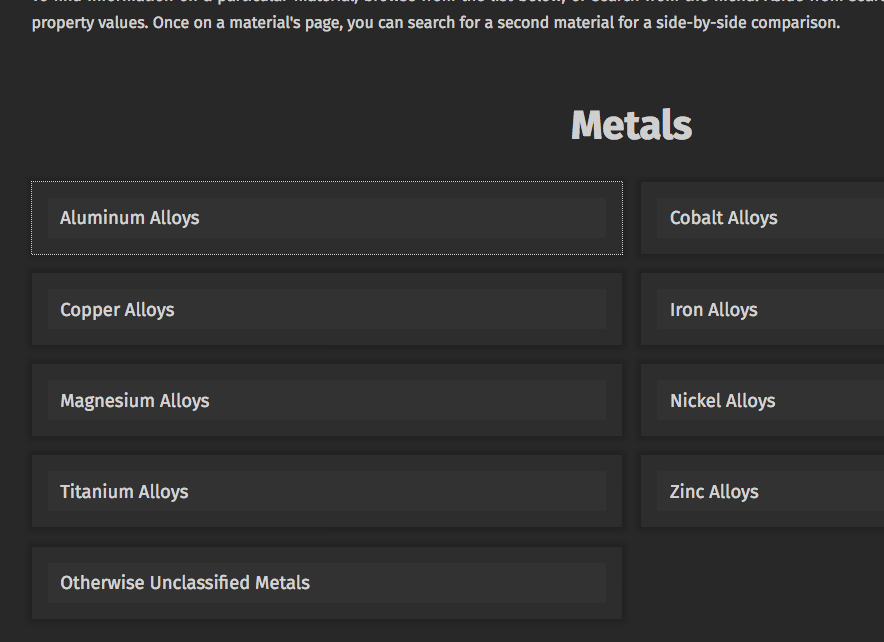

Cool bookmarks
References worth keeping close
This page will collect the links I keep coming back to, without turning into a messy dump.
For now I am setting up the buckets first, then I will fill them with the useful stuff.

🎓Learning💎Materials
Material Properties Database
Good for comparing materials
none
Materials and processes
Pages I want close by while learning more about analog work, metals, workshop setups, and physical making.
none
People and projects
Studios, makers, and side projects worth revisiting when I want to see how other people solve things.
none
Tools and references
Useful pages for fabrication, prototyping, and figuring out practical details without overcomplicating them.